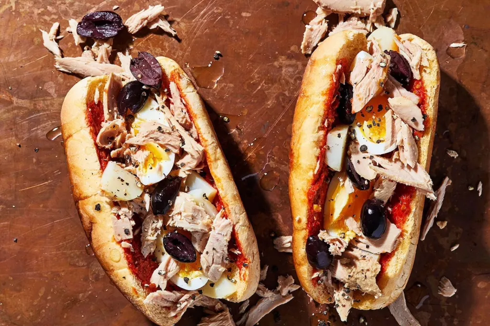

Fricassé

- Tunisian Fricassé Recipe
-
Ingredients:
500 grams white all-purpose flour
1 sachet regular active dry yeast (2.25 tsp)
1 tbsp olive oil
pinch of salt
Ingredients for filling:
pitted black olives
1-2 russet potatoes
eggs
harissa
tuna, drained
parsley
Preparation:
Assemble all ingredients in a stand mixer.
Turn on and slowly pour 1 cup of lukewarm water to bring dough together.
If necessary, add more water, a little at a time. (You can also do the mixing step by hand in a bowl.)
After you’ve assembled your dough, put in a bowl.
Rub olive oil over the top of the ball then cover and let rest 1-2 hours until it doubles in size.
Meanwhile:
Boil water in a large saucepan and place eggs in. Remove after 10 minutes and rinse under cold water.
Peel when cool and slice.
(If you prefer a jammier egg, you can remove it from the boiling water after 7-8 minutes.)
Boil water and cook russet potatoes until soft/tender but still holding their shape.
Drain under cold water and once cool, dice them into small squares.
When dough has risen, roll out on flat surface with a rolling pin.
Cut out circles using a round cookie-cutter (3-3.5” in diameter) or hand form them.
Then shape individual circles into ovals (2.5-3”).
Cover with a damp towel and let rest again for at least 10-15 min.
Heat your neutral cooking oil (canola or vegetable) in a deep pot.
Once the oil is hot, gently place the dough in the pot.
(Don’t overcrowd it, so be sure to do in batches.)
Let each piece of dough get golden-brown and puffed up on one side before flipping over and letting it
do the same on the other side.Remove from the pot with a slotted spoon and place on a rack or paper
towel-lined baking sheet.Repeat with remaining dough. Once cooked, take a serrated knife and slice down
the long side of the oval without cutting all the way through
(so it’s still in one piece like a sandwich roll or hotdog bun).Spread harissa on one (or both!) sides.
Fill with the potatoes, sliced hard-boiled egg, tuna, pitted black olives, and finely chopped parsley.Enjoy!